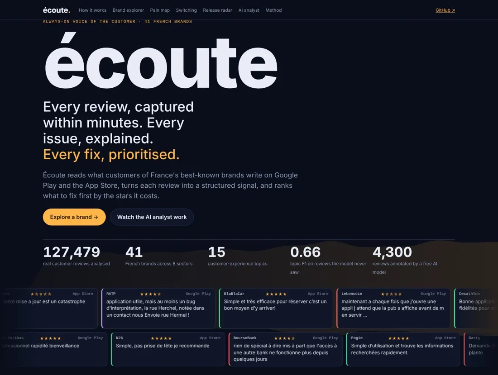
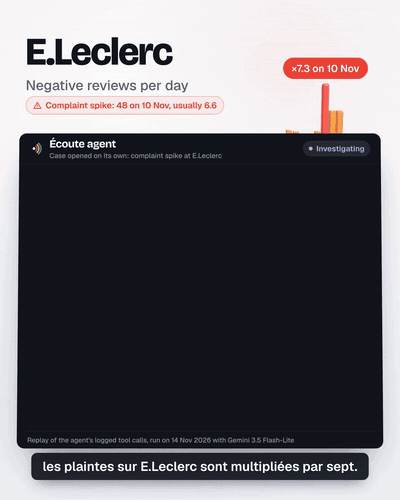
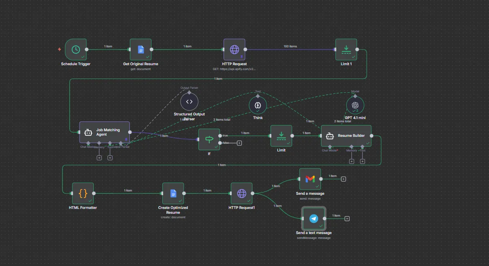
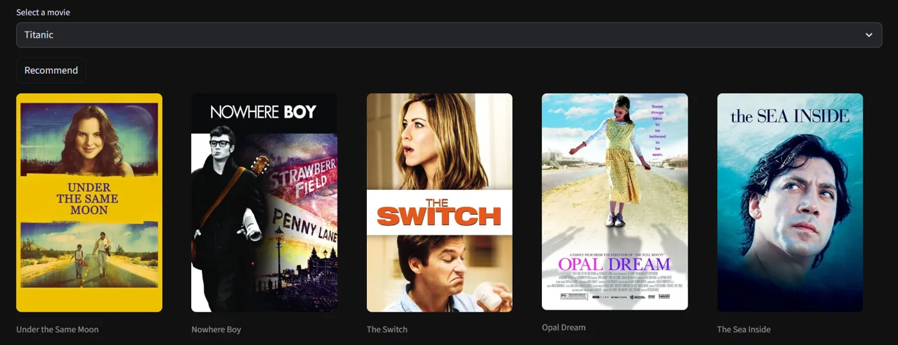
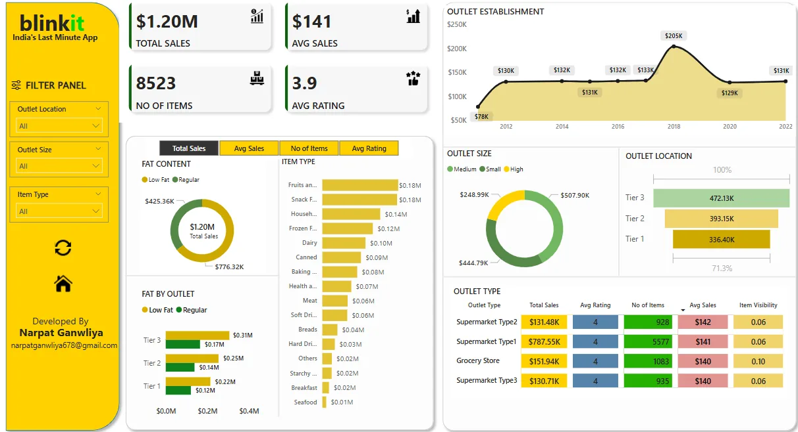
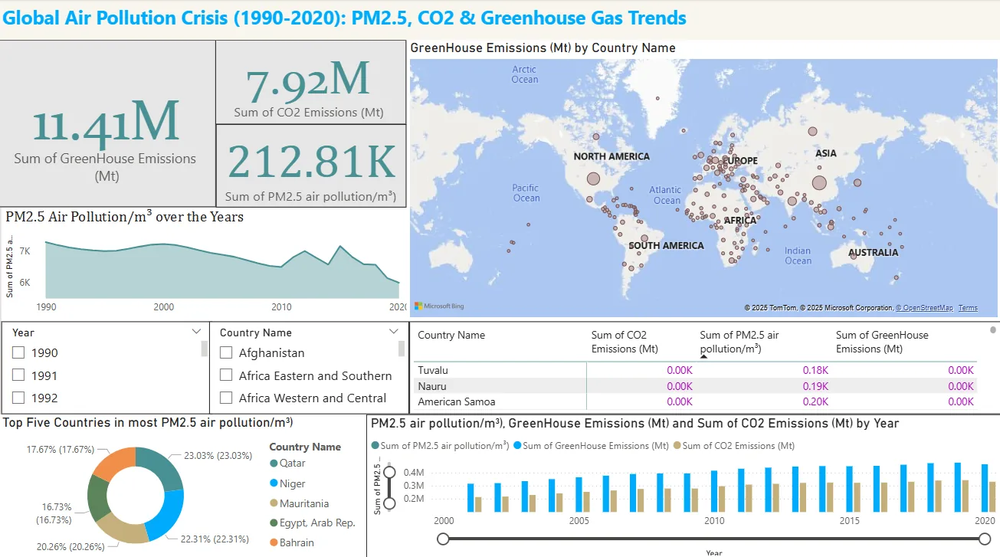
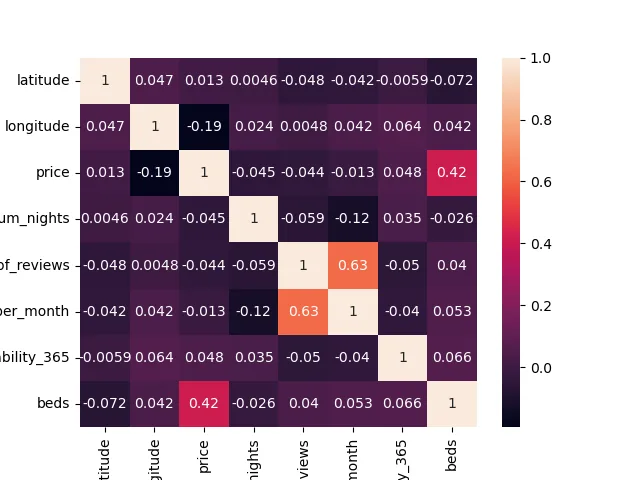
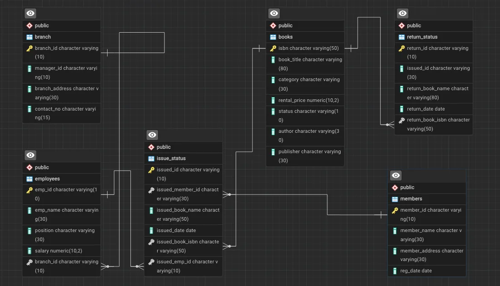

5h → 20min
Weekly CX reporting
Automated end to end with Python, Excel and AI agents at XPENG France.
Open to work · Paris · from December 2026
Narpat Ganwliya · Data Analyst, AI & Automation
Customer analytics, Power BI dashboards and AI agents. At XPENG France I cut the weekly customer-experience report from 5 hours to 20 minutes.
01 · Impact
5h → 20min
Automated end to end with Python, Excel and AI agents at XPENG France.
127k
By Écoute, my Voice-of-the-Customer AI agent across 41 French brands.
+15%
Per month, with the AI review-collection tool I built.
+20%
Dashboards and insights at ARSS Consultancy, with +15% market share.
02 · Experience
May – Nov 2026
France
PythonPower BIExcelAI agentsSentiment analysis
2023 – Aug 2024
Vadodara, India
SQLPower BIExcelGoogle Analytics
2022 – 2023
Rajasthan, India
SQLExcelPower BIStatistics
03 · Featured project
It turns 127,479 Google Play and App Store reviews from 41 French brands into signals, prices each pain point in stars, and investigates complaint spikes on its own.


04 · Projects

n8n pipeline: fresh jobs, an AI matching agent and a tailored ATS-friendly CV every morning.
n8nAI agentsApify

Content-based engine on TMDB data with cosine similarity, deployed as a Streamlit app.
Pythonscikit-learnStreamlit

Power BI view of retail sales by outlet, location and category, with drill-down filters.
Power BIDAXPower Query

GHG, CO2 and PM2.5 trends from 1990 to 2020, with maps and the top polluting countries.
Power BISQLPython

Exploratory analysis of New York listings: prices, boroughs, room types and availability.
PythonpandasSeaborn

Relational schema and SQL queries for members, books, loans and returns.
SQLPostgreSQLERD
05 · Skills
Prompt engineeringPython automationWeb scrapingAPIs
ETL pipelinesData cleaningData visualisationGoogle Analytics
Sentiment analysisNLPPredictive modellingRecommender systems
Voice of the CustomerNPSKPI reportingMarket researchData storytellingStakeholder communicationCross-functional workProblem solving
06 · About
I like problems where the answer is hiding in what customers already say: reviews, surveys, tickets. I clean the data, build the dashboard, and then automate the report so nobody has to build it twice.
2024 – 2026
Montpellier Business School · RNCP-certified programme. Thesis: customer churn prediction in telecom with machine learning.
2019 – 2022
MDSU, India. Statistics, probability and the habit of checking every number twice.
07 · Contact